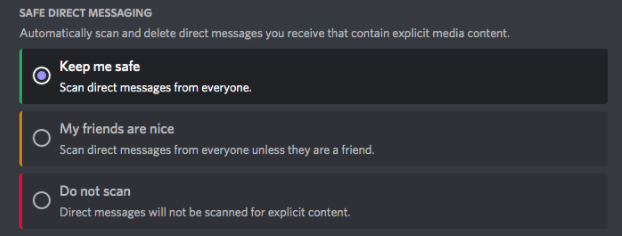

Chapter 4 Discord
Persona


Demographics
Target Audience and Users
Discord states that the minimum age to access the platform is between 13 and 17 (depending on the country of the user and local guidelines), however these restrictions do not prevent these younger users from accessing the platform. Though there are no official statistics on the average age of Discord users, one site estimates that majority of users are adults between 30-33 years of age.19 Though the creators of Discord made the platform with no targeted users in mind, the platform continues to be widely used by people who play video games as an efficient way to message and chat to others. Discord servers may also be created to connect users with similar interest or hobbies, chats with friends and family, and for educational or professional purposes [2]. Political leaning of users is varied, and there are many existing servers and communities for users of all positions of the political spectrum.
Individuals do not necessarily need an account to use Discord. One can access servers or communities through a shared link, and are only asked to create a username and agree to Discord’s terms of service. However, if one does not create an account in that session their activity will not be saved [3].
Discord contains both public and private servers. Private servers are accessed only by an invitation from a member of the group, and are typically used to chat with friends or family members. On the other hand, public servers may be accessed by anyone and are typically larger communities for those with similar interests. Discord also has a friend request feature, where one can accept or reject friend requests.
Content
Content Sharing
One of the best-known abilities of Discord is group-chatting, which allows content to be shared among individuals in multiple ways. * Server The primary way of how discord organizes group chats is through establishing servers, which are chat rooms where users can join to engage each other. Servers can be created for any purpose and can hold up to 500,000 members [5]. While some servers are public for anyone to join, most servers created are private and can only be joined through invitations. Within a created server, content can be shared under two types of channels: text and voice. Text channels enable the sharing of textual information as well as images, emojis, and files. Voice channels are like phone booths where members can engage in voice or video conversations. * Group direct messages (DMs) Another way of how content can be shared on discord is through direct messages. Similar to DM between individuals, group DMs can be used to communicate between multiple members. This content stays only between the members in the group, and both text and voice messages can be delivered within an established group.
Private Sharing
- Direct Messages (DMs)
On Discord, DMs can be sent between different users and allow users to engage in one-on-one conversations. These conversations will not be seen on a public chat server or any members that are not part of the conversation [4].
- Private server channels Both text and voice channels within a server can be created as private. This means that only those with permission can access the content within the channel. This can be an effective way to establish conversations between group leaders or administrative personnel.
Company/Business Details
Co-founders, Jason Citron and Stan Vishnevskiy developed Discord in 2012 and finally launched it in 2015. Since then, Discord has remained a private company, as it is not listed on any stock exchanges. As a result of Discord being a private company, it is not clearly known what sized stake each investor has. However, from when the company first launched, overall ownership has been split between the two co-founders and several other venture capitalist firms [9]. Some of the major investors that helped to finance Discord include [10]:
- Dragoneer Investment Group - Led the most recent funding round of $500 million in Semptember 2021.
- Sony Interactive Entertainment - Lead investor during secondary market funding in 2021
- Greenoaks - Lead investor for a $100 million Series H funding round in 2020 and one in 2018 with $150 million funding.
- Index Ventures - Led funding rounds in 2020 with $100 million and 2018 with $150 million in funding.
- Greylock - Lead investor for the earliest funding rounds in 2016
- Spark Capital - Partnered with Greylock as lead investors in 2016, funding $20 million.
Discord collected various rounds of funding over the years and has had many investors to help contribute to the success of the company. Discord over the last two years has been valued at $3.5 billion in the year 2020 and $7 billion in 2021 [12]. Today, Discord’s estimated value currently stands at approximately $15 billion as a result of the funding by Dragoneer Investment Group [11].
As Discord does not use ads like many other social platforms, there begs the question of how does Discord bring in revenue? Discord earns revenue in various ways. Firstly, their main source of revenue comes from the subscription packages that they offer. The premium subscription, Discord Nitro, costs a user $9.99 a month or $99.99 a year, whereas their lower price subscription, Nitro Classic, costs $4.99 a month and $49.99 a year [7]. According to Discords metrics, there are about 150 million active monthly users monthly [8]. Following this they also make money through a 10% cut of titles that game developers sell through verified servers [7]. Notably, Discord also generates a minor amount of profit from the stickers and merchandise they sell, such as branded tee-shirts, hoodies, socks, and more. While there has been no revenue report for 2021, their 2020 revenue was reported to be approximately $130 million [12].
Privacy and Surveillance
Discord’s ToS and Privacy Policy
Discord ToS: https://discord.com/terms
Discord’s Privacy Policy: https://discord.com/privacy
Terms of Service, Didn’t Read overview: https://tosdr.org/en/service/536
Key takeaways from examining Discord’s Privacy Policy
Key points from ToS: * Discord can read your private messages * Discord can delete specific content with no prior notice and without reason * Tracks users even if they use the Do Not Track (DNT) header * No right to a class action * Can sell or transfer your personal data as part of a bankruptcy proceeding or other type of financial transaction * Uses your personal data for targeted 3rd party advertising * Discord has a license on user-generated content even once your account is closed * Provides info about how they are using your data
Key takeaways: Discord is given a grade of E by ToSDR. Discord does track you and can read your messages. You have no right to a class action lawsuit against them, and in the case of a dispute, you are forced into binding arbitration. Discord can license user content to third parties. Benefits in Discord’s ToS include that it requires specific consent to share your information with third parties, you can request to access and have your personal data deleted, and they provide information regarding how they will use your data. Overall, by using Discord you relinquish your right to privacy regarding anything you say or do when using the service.
4.1 Balancing your PLN and Public Discourse
4.2 Digital Identity, Access and Inclusion, and Media Literacy
References
[1]
[2] https://discord.com/why-discord-is-different
[3] https://support.discord.com/hc/en-us/community/posts/360059214312-Use-Invite-Link-Without-Discord-Account
[4] https://www.alphr.com/discord-dm-someone/#:%7E:text=Discord%27s%20direct%20messages%20allow%20you,you%27re%20all%20currently%20engaged
[5] https://www.pcmag.com/how-to/what-is-discord-and-how-do-you-use-it
[6] https://www.wepc.com/tips/what-is-discord-server-boost/
[7] https://www.cbinsights.com/research/report/how-discord-makes-money/
[8] https://discord.com/company
[9] https://www.wepc.com/tips/who-owns-discord/
[10] https://pcstrike.com/who-owns-discord/
[11] https://www.bnnbloomberg.ca/chat-app-discord-is-worth-15-billion-after-new-funding-1.1652842]
[12] https://www.businessofapps.com/data/discord-statistics/
Social Media and PLN in Education
Interacting on Discord
Users can interact with other users using different features within Discord. A user can start Voice Calls, Video Calls, and DM other users. Users can use the “@” symbol in combination with a username to refer to other users. One may “react” to messages through the use of a large list of classic and animated emojis and memes using the Add Reaction (as depicted in the following screenshot). The platform also supports file sharing such as pdfs, Words docs, images, videos and more. One may also choose from a variety of other options using the ellipsis located in the far right corner of the message options as shown below.
One may also choose from a variety of other options using the ellipsis located in the far right corner of the message options as shown below.
 For video chats, up to 25 individuals can join one session at a time. Within a video session, one can either have their camera on or off, share their screens, and message each other.
For video chats, up to 25 individuals can join one session at a time. Within a video session, one can either have their camera on or off, share their screens, and message each other.
Educational Accounts
One of the ways discord can help educators is through acting as a platform to encourage collaboration and discussion among learners. For members who actively engage in discussions, a well organized educational server can act as a personal learning network to engage with other learners and communicate on common topics.
Code::together (https://discord.me/code) Code Together is a public educational server on the subject of programming and software development. Members of the server can range from absolute beginners to certified developers. It aims to act as a platform for sharing programming related resources and discuss specific programming problems or challenges. It also has channels for advertising personal or enterprise programming or software development projects. Just like other servers, any messages or posts can be quickly and easily responded to via emojis.Through observation, content is more likely to be responded to by others under channels with specific topics such as a programming language.
The English Hub (https://discord.me/enghub) Leveraging the benefits of creating voice channels, discord can serve as a great platform for language learning. The English hub is a server targeted for English learning and sharing related resources. Learners at different proficiency levels can engage in discussions on a range of topics and communicate with members from various backgrounds. The text channels are designed with different discussion topics and useful English learning resources such as recommended readings and word-of-the-day. The voice channels act as chat rooms for practicing English speaking and are categorized by the level of proficiency from beginner to advanced.
HINF Connect HINF Connect is one of the many servers under the University of Victoria server. The university server allows certified accounts users with university email to join clubs, social or study groups, and specific course or academic program servers created by members of the university. This establishes a convenient way for learners from the same program, course, or club to get together and share meaningful content to build a better and more networked university learning experience. The HINF Connect server was created by HINF students from the Class of 2021 but is joined by students from different years of study (including graduate students). Channels are organized by different HINF courses and voice channels act as a great source to conduct group studies. Other resources, including Co-op information, experience sharing from senior students, and industry news are valuable to learners studying in the HINF program.

Safety Concerns for Educators
To be able to access the Discord website and app, Discord requires its users to be 13 years old and up unless local legislation mandates an older age. To ensure that the age requirement is satisfied, upon creating an account, Discord will ask users to confirm their age. If a user is reported to be under the age requirement, they will be locked out until they can confirm their age with an official ID document.
Discord contains adult content and is not suitable for young children. Some servers and channels must be labeled as age-restricted for only people over 18 years old to have access. When someone tries to enter the server, a warning will appear to confirm their age and let them know the server may contain graphic content. Servers that are not labeled- should be reported.
Discord encourages its users who are under 18 to activate their age-restricted content filter, Keep me safe. This allows Discord to scan images and videos that have been sent through direct messaging and block out any adult material or inappropriate behaviour. This filter can be accessed through the Privacy & Safety section in User Settings. Along with this, users are also able to block any users who they do not want to communicate with. 